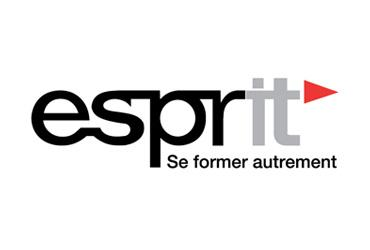
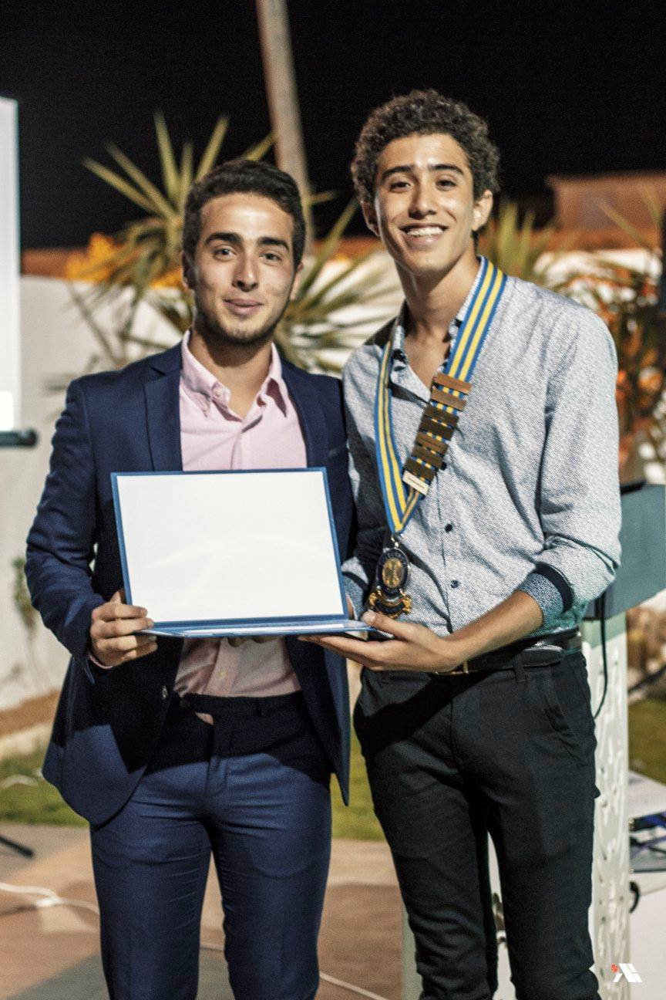
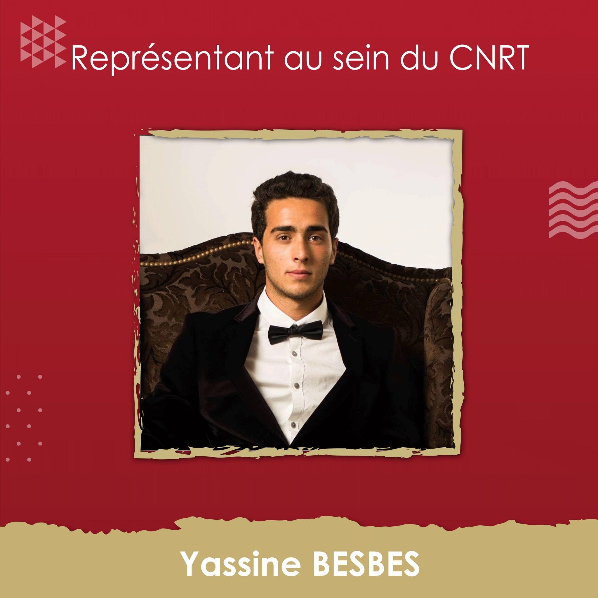
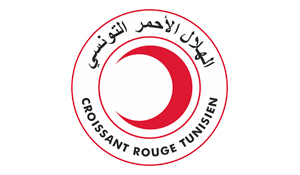

|
 | |
|---|---|---|
| Baccalauréat en Technologique 2018, lycée Abou Kacem chebbi Sfax | Diplomée par IPEIS, concours nationale d'entrée aux écoles d'ingénieurs session juin 2020 | Cycle d'ingenieurs en informatique à Esprit |
|  |  |  |
| Membre actif au sein du Rotaract club Sfax Doyen | Responsable au sein du CNRT de Rotaract club Sfax Doyen | Membre au sein du croissant rouge Tunisien |